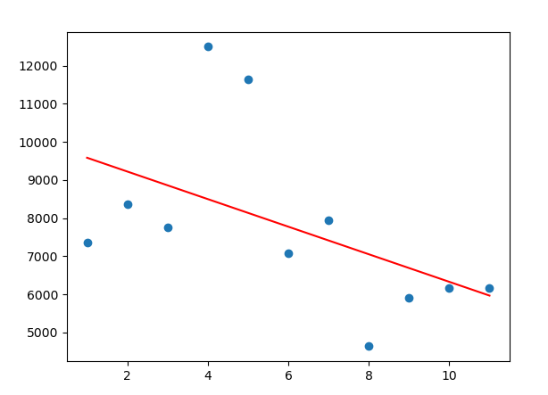

Welcome to my COVID map! I hope you are safe and healthy.
Red means that the the slope of the graph above divided by the population of that state is greater than 0.000008.
Yellow means that the slope of the graph above divided by the population of that state is between 0 and 0.000008.
Green means that the slope of the graph above divided by the population of that state is less than 0 (negative).
Linear Regression is used to find the slope and thus predict the trend by
averaging all the points (line of best fit). Pay attention to the axes.
The y-axis is different from other COVID maps you will find.